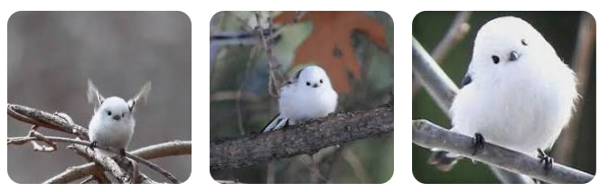

🕊🐥🕊🦢🐤🦆 Aegithalos는 그리스 어 aigithalos에서 유래하며, 박새류를 총칭하는 것이다. 아리스토텔레스는 aigithalos를 세가지로 나누고 있는데 제1류는 박새 가운데 가장 큰 되새 정도의 크기를 말하고, 제2류는 산에서 생활하는 꼬리깃이 긴 새를 말하며, 제3류는 크기가 가장 작은 박새류를 말한다. 여기서 오목눈이는 제 2류에 속한다. 아리스토텔레스의 이 분류는 오목눈이가 산에서 서식하고 꼬리기 긴 새임을 잘 나타낸다. Caudatus는 ‘긴꼬리를 가진 새’라는 뜻이다. 한국에서는 눈이 오목하게 들어간 생김새라고 하여 '오목눈이'라고 부른다.
검은 색의 긴 꼬리가 특징으로, 몸길이는 14센티미터인데 꼬리길이가 8센티미터에 이른다. 영어이름에도 ‘꽁지가 긴(long-tailed)’이라는 말이 들어간다. 몸무게는 6~8그램이다. 뚜렷한 검은 눈썹선이 눈앞에서 등의 검은 깃털로 이어져 있고, 뺨은 흰색이다. 눈 위쪽에 노란 눈테가 있다. 날개는 검은색과 흰색을 띠고, 등은 옅은 분홍색, 배는 흰색이다. 암수가 똑같이 생겨 성별 구분은 힘들다. 어린 오목눈이는 성조에 비해 몸 윗면의 분홍빛이 약하고 날개깃의 흰 부분이 적다. 꼬리는 성조보다 짧다. 눈 위쪽에는 주홍색 눈테가 있다. 머리 양옆 깃털은 흑갈색이다.
